Summary
This experiment investigates tennis racket string setup. Box-Behnken design to maximize power and control by tuning main string tension, cross string tension, and string gauge.
The design varies 3 factors: main tension kg (kg), ranging from 20 to 28, cross tension kg (kg), ranging from 18 to 26, and gauge mm (mm), ranging from 1.15 to 1.35. The goal is to optimize 2 responses: power score (pts) (maximize) and control score (pts) (maximize). Fixed conditions held constant across all runs include racket = midplus_100, string material = polyester.
A Box-Behnken design was chosen because it efficiently fits quadratic models with 3 continuous factors while avoiding extreme corner combinations — requiring only 15 runs instead of the 8 needed for a full factorial at two levels.
Quadratic response surface models were fitted to capture potential curvature and factor interactions. The RSM contour plots below visualize how pairs of factors jointly affect each response.
Key Findings
For power score, the most influential factors were cross tension kg (38.9%), main tension kg (33.6%), gauge mm (27.4%). The best observed value was 8.2 (at main tension kg = 24, cross tension kg = 26, gauge mm = 1.35).
For control score, the most influential factors were cross tension kg (47.6%), main tension kg (40.9%), gauge mm (11.5%). The best observed value was 6.4 (at main tension kg = 20, cross tension kg = 22, gauge mm = 1.35).
Recommended Next Steps
- Run confirmation experiments at the predicted optimal settings to validate the model.
- Consider whether any fixed factors should be varied in a future study.
Experimental Setup
Factors
| Factor | Low | High | Unit |
|---|
main_tension_kg | 20 | 28 | kg |
cross_tension_kg | 18 | 26 | kg |
gauge_mm | 1.15 | 1.35 | mm |
Fixed: racket = midplus_100, string_material = polyester
Responses
| Response | Direction | Unit |
|---|
power_score | ↑ maximize | pts |
control_score | ↑ maximize | pts |
Configuration
{
"metadata": {
"name": "Tennis Racket String Setup",
"description": "Box-Behnken design to maximize power and control by tuning main string tension, cross string tension, and string gauge"
},
"factors": [
{
"name": "main_tension_kg",
"levels": [
"20",
"28"
],
"type": "continuous",
"unit": "kg"
},
{
"name": "cross_tension_kg",
"levels": [
"18",
"26"
],
"type": "continuous",
"unit": "kg"
},
{
"name": "gauge_mm",
"levels": [
"1.15",
"1.35"
],
"type": "continuous",
"unit": "mm"
}
],
"fixed_factors": {
"racket": "midplus_100",
"string_material": "polyester"
},
"responses": [
{
"name": "power_score",
"optimize": "maximize",
"unit": "pts"
},
{
"name": "control_score",
"optimize": "maximize",
"unit": "pts"
}
],
"settings": {
"operation": "box_behnken",
"test_script": "use_cases/211_tennis_racket_string/sim.sh"
}
}
Experimental Matrix
The Box-Behnken Design produces 15 runs. Each row is one experiment with specific factor settings.
| Run | main_tension_kg | cross_tension_kg | gauge_mm |
|---|
| 1 | 24 | 18 | 1.15 |
| 2 | 24 | 22 | 1.25 |
| 3 | 28 | 22 | 1.35 |
| 4 | 28 | 22 | 1.15 |
| 5 | 24 | 22 | 1.25 |
| 6 | 24 | 22 | 1.25 |
| 7 | 20 | 22 | 1.35 |
| 8 | 28 | 18 | 1.25 |
| 9 | 24 | 18 | 1.35 |
| 10 | 28 | 26 | 1.25 |
| 11 | 20 | 22 | 1.15 |
| 12 | 24 | 26 | 1.35 |
| 13 | 20 | 18 | 1.25 |
| 14 | 20 | 26 | 1.25 |
| 15 | 24 | 26 | 1.15 |
Step-by-Step Workflow
1
Preview the design
$ doe info --config use_cases/211_tennis_racket_string/config.json
2
Generate the runner script
$ doe generate --config use_cases/211_tennis_racket_string/config.json \
--output use_cases/211_tennis_racket_string/results/run.sh --seed 42
3
Execute the experiments
$ bash use_cases/211_tennis_racket_string/results/run.sh
4
Analyze results
$ doe analyze --config use_cases/211_tennis_racket_string/config.json
5
Get optimization recommendations
$ doe optimize --config use_cases/211_tennis_racket_string/config.json
6
Multi-objective optimization
With 2 competing responses, use --multi to find the best compromise via Derringer–Suich desirability.
$ doe optimize --config use_cases/211_tennis_racket_string/config.json --multi
7
Generate the HTML report
$ doe report --config use_cases/211_tennis_racket_string/config.json \
--output use_cases/211_tennis_racket_string/results/report.html
Features Exercised
| Feature | Value |
|---|
| Design type | box_behnken |
| Factor types | continuous (all 3) |
| Arg style | double-dash |
| Responses | 2 (power_score ↑, control_score ↑) |
| Total runs | 15 |
Analysis Results
Generated from actual experiment runs using the DOE Helper Tool.
Response: power_score
Top factors: cross_tension_kg (38.9%), main_tension_kg (33.6%), gauge_mm (27.4%).
ANOVA
| Source | DF | SS | MS | F | p-value |
|---|
| Source | DF | SS | MS | F | p-value |
| main_tension_kg | 2 | 2.9718 | 1.4859 | 27.861 | 0.0002 |
| cross_tension_kg | 2 | 2.6808 | 1.3404 | 25.132 | 0.0004 |
| gauge_mm | 2 | 1.6118 | 0.8059 | 15.111 | 0.0019 |
| Lack | of | Fit | 6 | 8.3982 | 1.3997 |
| Pure | Error | 2 | 0.1067 | | |
| Error | 8 | 8.5049 | 0.0533 | | |
| Total | 14 | 15.7693 | 1.1264 | | |
Pareto Chart

Main Effects Plot
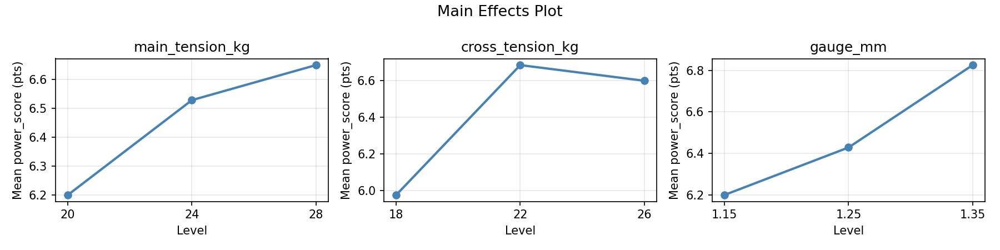
Normal Probability Plot of Effects
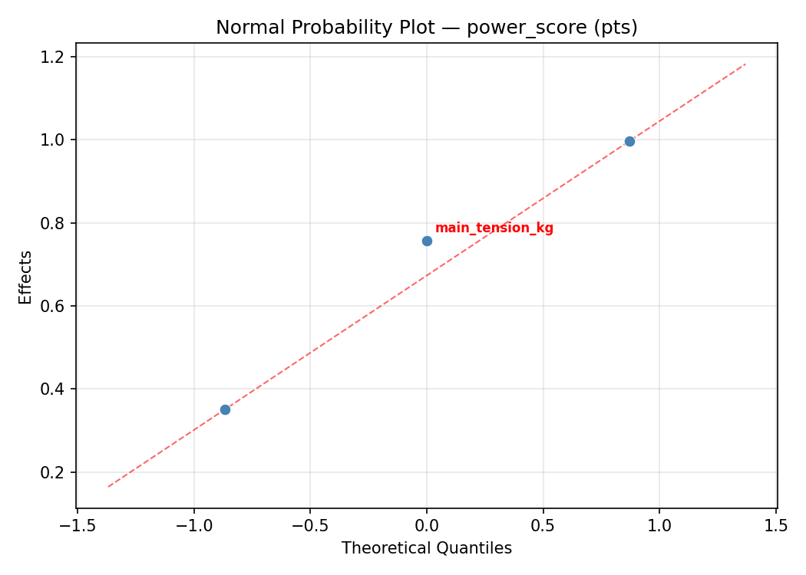
Half-Normal Plot of Effects
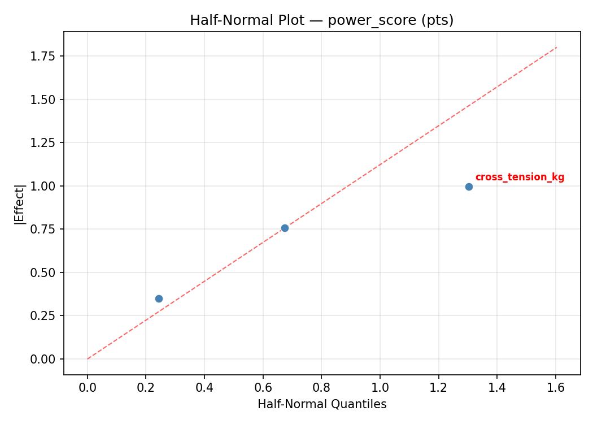
Model Diagnostics
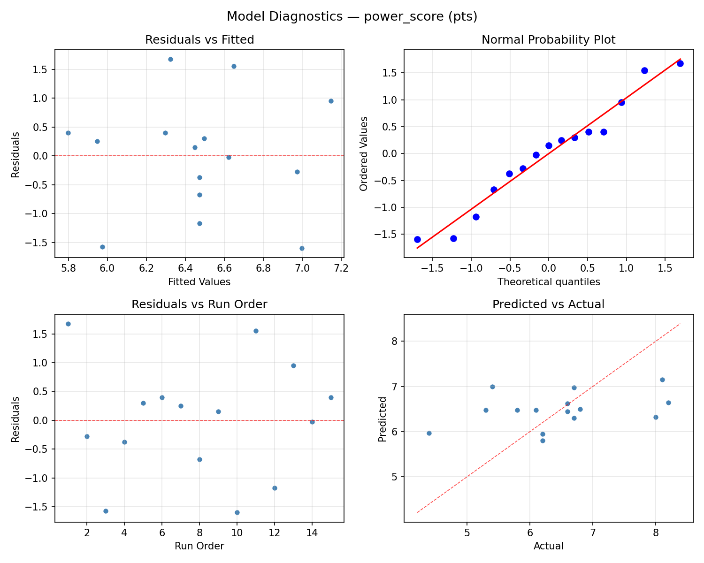
Response: control_score
Top factors: cross_tension_kg (47.6%), main_tension_kg (40.9%), gauge_mm (11.5%).
ANOVA
| Source | DF | SS | MS | F | p-value |
|---|
| Source | DF | SS | MS | F | p-value |
| main_tension_kg | 2 | 2.0298 | 1.0149 | 4.171 | 0.0574 |
| cross_tension_kg | 2 | 2.6158 | 1.3079 | 5.375 | 0.0331 |
| gauge_mm | 2 | 0.1873 | 0.0936 | 0.385 | 0.6925 |
| Lack | of | Fit | 6 | 2.3538 | 0.3923 |
| Pure | Error | 2 | 0.4867 | | |
| Error | 8 | 2.8405 | 0.2433 | | |
| Total | 14 | 7.6733 | 0.5481 | | |
Pareto Chart
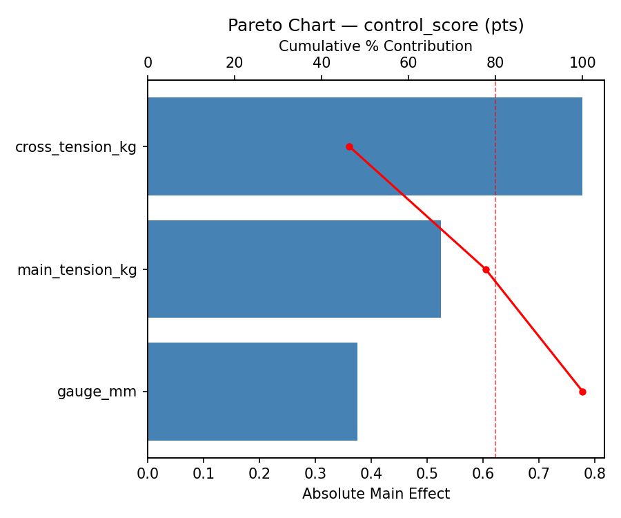
Main Effects Plot

Normal Probability Plot of Effects
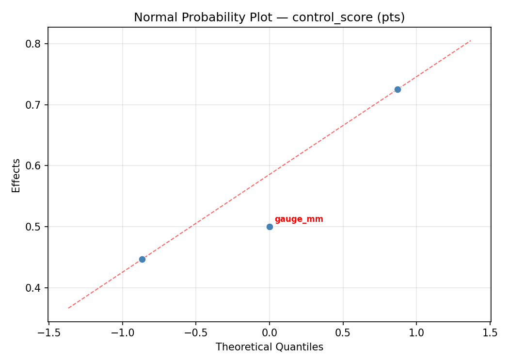
Half-Normal Plot of Effects
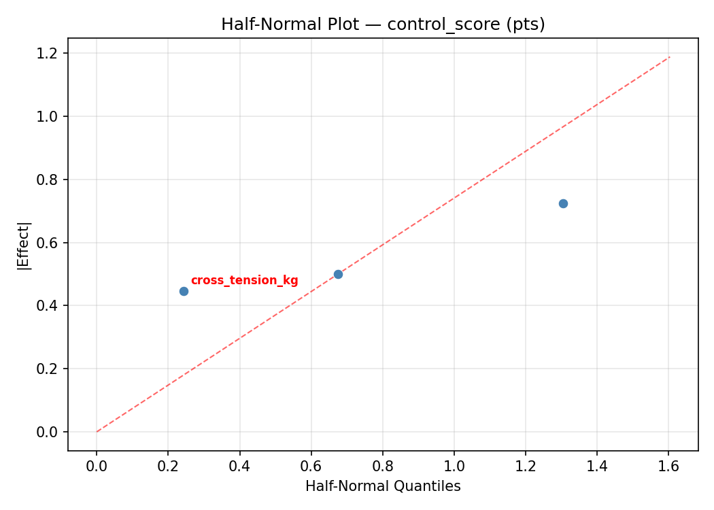
Model Diagnostics
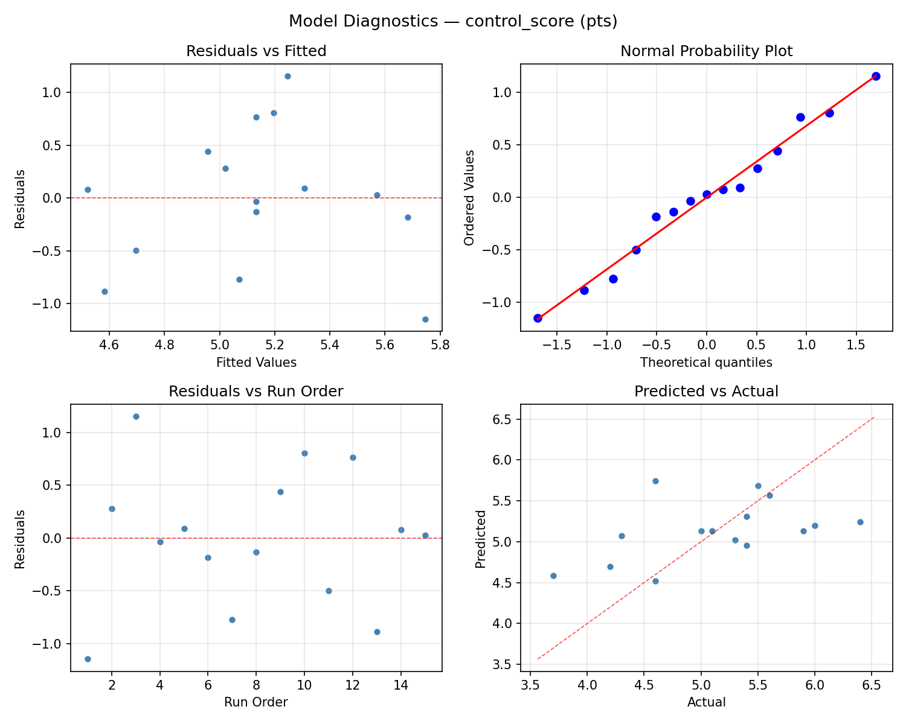
Response Surface Plots
3D surfaces fitted with quadratic RSM. Red dots are observed data points.
control score cross tension kg vs gauge mm
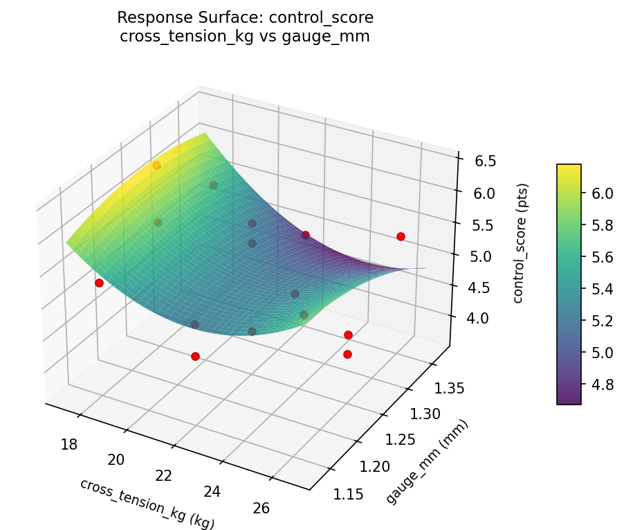
control score main tension kg vs cross tension kg

control score main tension kg vs gauge mm

power score cross tension kg vs gauge mm

power score main tension kg vs cross tension kg
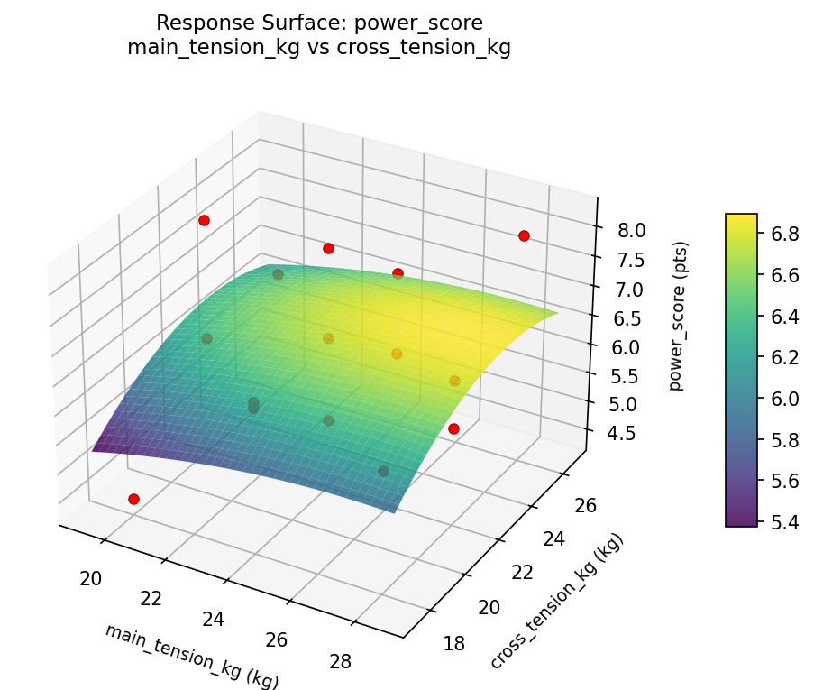
power score main tension kg vs gauge mm
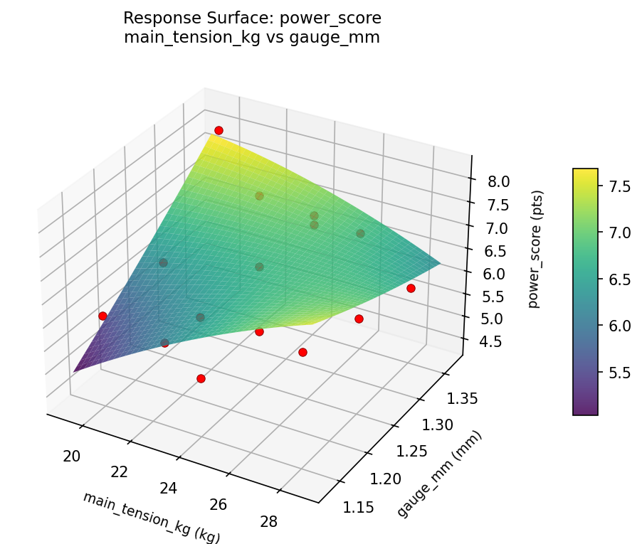
Multi-Objective Optimization
When responses compete, Derringer–Suich desirability finds the best compromise.
Each response is scaled to a 0–1 desirability, then combined via a weighted geometric mean.
Overall Desirability
D = 0.6479
Per-Response Desirability
| Response | Weight | Desirability | Predicted | Dir |
|---|
power_score |
1.0 |
|
6.70 0.5957 6.70 pts |
↑ |
control_score |
1.5 |
|
5.60 0.6852 5.60 pts |
↑ |
Recommended Settings
| Factor | Value |
|---|
main_tension_kg | 24 kg |
cross_tension_kg | 18 kg |
gauge_mm | 1.15 mm |
Source: from observed run #15
Trade-off Summary
Sacrifice = how much worse than single-objective best.
| Response | Predicted | Best Observed | Sacrifice |
|---|
control_score | 5.60 | 6.40 | +0.80 |
Top 3 Runs by Desirability
| Run | D | Factor Settings |
|---|
| #5 | 0.6186 | main_tension_kg=28, cross_tension_kg=22, gauge_mm=1.35 |
| #9 | 0.5990 | main_tension_kg=24, cross_tension_kg=22, gauge_mm=1.25 |
Model Quality
| Response | R² | Type |
|---|
control_score | 0.3265 | linear |
Full Multi-Objective Output
============================================================
MULTI-OBJECTIVE OPTIMIZATION
Method: Derringer-Suich Desirability Function
============================================================
Overall desirability: D = 0.6479
Response Weight Desirability Predicted Direction
---------------------------------------------------------------------
power_score 1.0 0.5957 6.70 pts ↑
control_score 1.5 0.6852 5.60 pts ↑
Recommended settings:
main_tension_kg = 24 kg
cross_tension_kg = 18 kg
gauge_mm = 1.15 mm
(from observed run #15)
Trade-off summary:
power_score: 6.70 (best observed: 8.20, sacrifice: +1.50)
control_score: 5.60 (best observed: 6.40, sacrifice: +0.80)
Model quality:
power_score: R² = 0.3388 (linear)
control_score: R² = 0.3265 (linear)
Top 3 observed runs by overall desirability:
1. Run #15 (D=0.6479): main_tension_kg=24, cross_tension_kg=18, gauge_mm=1.15
2. Run #5 (D=0.6186): main_tension_kg=28, cross_tension_kg=22, gauge_mm=1.35
3. Run #9 (D=0.5990): main_tension_kg=24, cross_tension_kg=22, gauge_mm=1.25
Full Analysis Output
=== Main Effects: power_score ===
Factor Effect Std Error % Contribution
--------------------------------------------------------------
cross_tension_kg 1.1000 0.2740 38.9%
main_tension_kg 0.9500 0.2740 33.6%
gauge_mm 0.7750 0.2740 27.4%
=== ANOVA Table: power_score ===
Source DF SS MS F p-value
-----------------------------------------------------------------------------
main_tension_kg 2 2.9718 1.4859 27.861 0.0002
cross_tension_kg 2 2.6808 1.3404 25.132 0.0004
gauge_mm 2 1.6118 0.8059 15.111 0.0019
Lack of Fit 6 8.3982 1.3997 26.244 0.0372
Pure Error 2 0.1067 0.0533
Error 8 8.5049 0.0533
Total 14 15.7693 1.1264
=== Summary Statistics: power_score ===
main_tension_kg:
Level N Mean Std Min Max
------------------------------------------------------------
20 4 6.9500 0.8103 6.2000 8.1000
24 7 6.0000 0.8347 4.4000 6.7000
28 4 6.8250 1.4886 5.3000 8.2000
cross_tension_kg:
Level N Mean Std Min Max
------------------------------------------------------------
18 4 6.9000 1.3589 5.4000 8.1000
22 7 6.6143 0.7669 5.8000 8.2000
26 4 5.8000 1.1576 4.4000 6.8000
gauge_mm:
Level N Mean Std Min Max
------------------------------------------------------------
1.15 4 6.3500 1.5716 4.4000 8.2000
1.25 7 6.8000 0.9849 5.3000 8.1000
1.35 4 6.0250 0.5560 5.4000 6.7000
=== Main Effects: control_score ===
Factor Effect Std Error % Contribution
--------------------------------------------------------------
cross_tension_kg 0.9750 0.1912 47.6%
main_tension_kg 0.8393 0.1912 40.9%
gauge_mm 0.2357 0.1912 11.5%
=== ANOVA Table: control_score ===
Source DF SS MS F p-value
-----------------------------------------------------------------------------
main_tension_kg 2 2.0298 1.0149 4.171 0.0574
cross_tension_kg 2 2.6158 1.3079 5.375 0.0331
gauge_mm 2 0.1873 0.0936 0.385 0.6925
Lack of Fit 6 2.3538 0.3923 1.612 0.4310
Pure Error 2 0.4867 0.2433
Error 8 2.8405 0.2433
Total 14 7.6733 0.5481
=== Summary Statistics: control_score ===
main_tension_kg:
Level N Mean Std Min Max
------------------------------------------------------------
20 4 4.6750 0.8180 3.7000 5.4000
24 7 5.5143 0.5843 4.6000 6.4000
28 4 4.9250 0.7274 4.2000 5.9000
cross_tension_kg:
Level N Mean Std Min Max
------------------------------------------------------------
18 4 4.8500 0.9609 3.7000 6.0000
22 7 4.9000 0.5354 4.2000 5.5000
26 4 5.8250 0.4349 5.4000 6.4000
gauge_mm:
Level N Mean Std Min Max
------------------------------------------------------------
1.15 4 5.2500 0.9037 4.2000 6.4000
1.25 7 5.0143 0.7515 3.7000 5.9000
1.35 4 5.2250 0.7411 4.3000 6.0000
Optimization Recommendations
=== Optimization: power_score ===
Direction: maximize
Best observed run: #11
main_tension_kg = 24
cross_tension_kg = 26
gauge_mm = 1.35
Value: 8.2
RSM Model (linear, R² = 0.1042, Adj R² = -0.1402):
Coefficients:
intercept +6.4733
main_tension_kg +0.3125
cross_tension_kg +0.3125
gauge_mm -0.1000
RSM Model (quadratic, R² = 0.4426, Adj R² = -0.5606):
Coefficients:
intercept +6.6667
main_tension_kg +0.3125
cross_tension_kg +0.3125
gauge_mm -0.1000
main_tension_kg*cross_tension_kg -0.3750
main_tension_kg*gauge_mm +0.4500
cross_tension_kg*gauge_mm -0.2000
main_tension_kg^2 -0.8958
cross_tension_kg^2 +0.3542
gauge_mm^2 +0.1792
Curvature analysis:
main_tension_kg coef=-0.8958 concave (has a maximum)
cross_tension_kg coef=+0.3542 convex (has a minimum)
gauge_mm coef=+0.1792 convex (has a minimum)
Notable interactions:
main_tension_kg*gauge_mm coef=+0.4500 (synergistic)
main_tension_kg*cross_tension_kg coef=-0.3750 (antagonistic)
Predicted optimum (from linear model, at observed points):
main_tension_kg = 28
cross_tension_kg = 26
gauge_mm = 1.25
Predicted value: 7.0983
Surface optimum (via L-BFGS-B, linear model):
main_tension_kg = 28
cross_tension_kg = 26
gauge_mm = 1.15
Predicted value: 7.1983
Model quality: Weak fit — consider adding center points or using a different design.
Factor importance:
1. main_tension_kg (effect: 1.2, contribution: 54.6%)
2. cross_tension_kg (effect: 0.7, contribution: 31.5%)
3. gauge_mm (effect: 0.3, contribution: 13.9%)
=== Optimization: control_score ===
Direction: maximize
Best observed run: #3
main_tension_kg = 20
cross_tension_kg = 22
gauge_mm = 1.35
Value: 6.4
RSM Model (linear, R² = 0.2121, Adj R² = -0.0028):
Coefficients:
intercept +5.1333
main_tension_kg +0.0125
cross_tension_kg -0.3250
gauge_mm +0.3125
RSM Model (quadratic, R² = 0.5394, Adj R² = -0.2896):
Coefficients:
intercept +5.3667
main_tension_kg +0.0125
cross_tension_kg -0.3250
gauge_mm +0.3125
main_tension_kg*cross_tension_kg +0.3500
main_tension_kg*gauge_mm -0.0250
cross_tension_kg*gauge_mm +0.0500
main_tension_kg^2 +0.3792
cross_tension_kg^2 -0.5458
gauge_mm^2 -0.2708
Curvature analysis:
cross_tension_kg coef=-0.5458 concave (has a maximum)
main_tension_kg coef=+0.3792 convex (has a minimum)
gauge_mm coef=-0.2708 concave (has a maximum)
Notable interactions:
main_tension_kg*cross_tension_kg coef=+0.3500 (synergistic)
Predicted optimum (from linear model, at observed points):
main_tension_kg = 24
cross_tension_kg = 18
gauge_mm = 1.35
Predicted value: 5.7708
Surface optimum (via L-BFGS-B, linear model):
main_tension_kg = 28
cross_tension_kg = 18
gauge_mm = 1.35
Predicted value: 5.7833
Model quality: Weak fit — consider adding center points or using a different design.
Factor importance:
1. cross_tension_kg (effect: 0.9, contribution: 45.0%)
2. gauge_mm (effect: 0.6, contribution: 32.0%)
3. main_tension_kg (effect: 0.5, contribution: 23.0%)